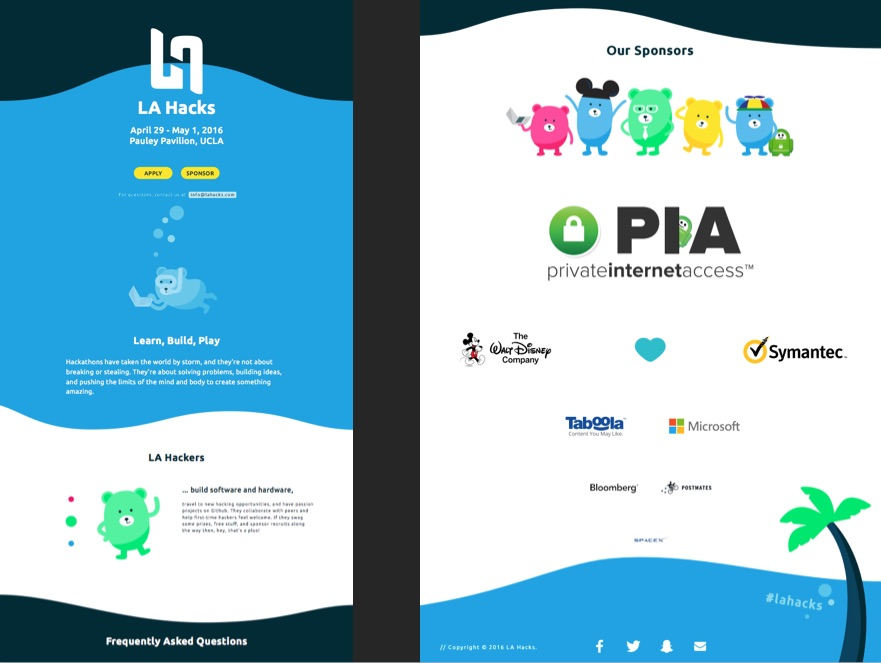
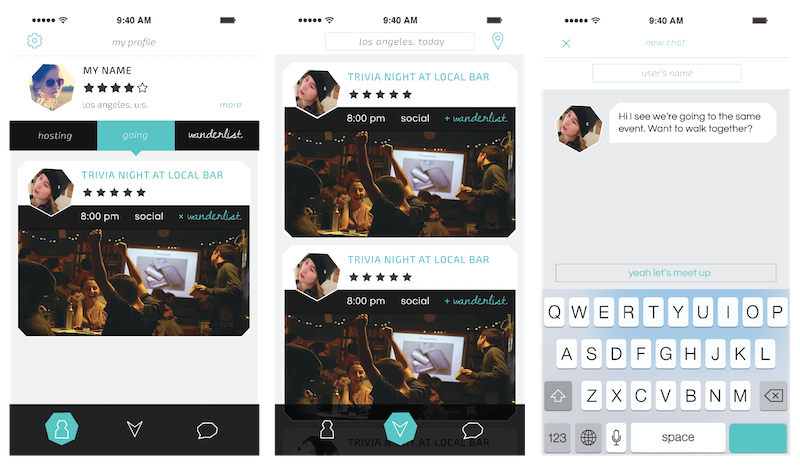
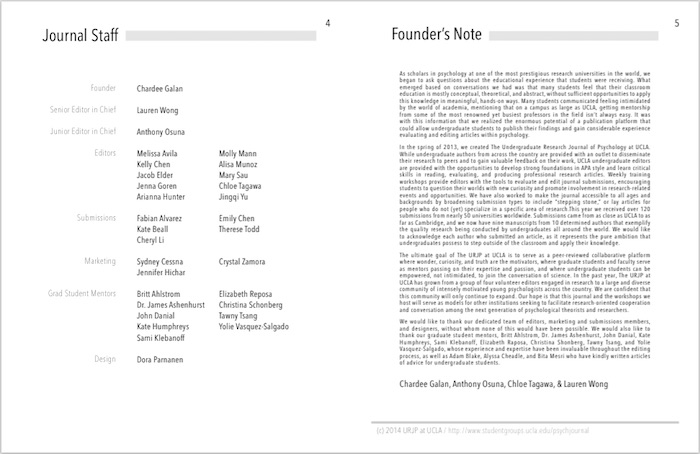

Market Research & User Insights
Dulcolax, 2016
A redesign of the Dulcolax landing page website showcases insight on the product target demographic and how the company can convert more users to purchase. Research included data and statistics of Dulcolax and competition use, target consumer behavior, medical and sales interfaces, and landing page best practices. These insights combined to create the user flow and necessary interactions within the site.
Research Presentation PDF
As a user clicks Purchase, details open within the website to retain users, rather than linking to a retailer site. Users can choose from various online retailers to present users with a familiar source and encourage purchase. Online rather than in-store purchase is convenient for the working class target demographic of Dulcolax.
The use of colloquial copy rather than medical terms, as well as an interactive, user-specific symptom chooser, allow the user to comfortably feel part of the prescription process.
The target user is either uneducated or indecisive when choosing a laxative brand. The grid system limits the amount of products the user is seeing, meaning that viewable products are also the most relevant, and encourages user action to purchase. The grid reads horizontally, catering to Dulcolax's older user demographic.
Dulcolax is expensive relative to its market, so a Coupons page pushes deals and affordability to low income users.

A quote from a target demographic user promotes transparency and trust.

A Community page is a way for users to learn more about the product and a reason for users to return to the site.
Co-Lead UX/UI & Brand Designer
LA Hacks @ UCLA, 2015 - 2016
LA Hacks is UCLA's annual weekend-long hackathon with 1500 student participants and various company sponsors. LA Hacks 2016 had the goal to draw in participants ranging from students new to coding, returning coders, non-coders, and females. The hackathon's visual identity would have to advertise and reflect this as well as inspire inclusivity in the participants themselves.
I had the chance to work as one of two Designers, as well as to build a team and set up a project timeline in terms of design deliverables and meeting with developers and fellow designers.
When presenting design directions and updates to the large team of LA Hacks organizers, my Co-Designer and I focused validation on LA Hacks event goals, target users, and best practices. This allowed the organizational team to learn about their participants and how students could best perceive LA Hacks as inclusive and encouraging.
Above: Ideation, design directions, initial splash page concept. Interactions mirror the quick-paced working environment of a hackathon. The side paddle interaction is controlled by keyboard and can be a collaborative or competitive two player game, or a new and challenging single player effort.
The landing page design and copy should generate excitement and curiosity in users familiar with LA Hacks, while also being playful and engaging enough to get shared around to new users.

It was important to not only design the website but also the copy used in social media advertising and website to relfect the hackathon's goals. All participants should feel not only welcome but important to the hackathon experience, to be integrated in a non-imposing way to returning coders. These messages were emphasized in the landing page experience, because digital users are converted into hackathon participants when they sign up through the site.
My Co-Designer and I worked alongside two developers, communicating any time constraints and iterating on new features side by side. As the hackathon weekend neared, two designers focused on shirt, swag, and pavilion event space design joined our meetings so that we could work side by side and incorporate our user research and hackathon goals into all aspects of design.
From digital to physical brand recognition and participant interaction, my character design of the LA Hacks 2016 'Bruin' bear hacker mascot played a central role. The bear allowed diversity, various user types, and a personal human touch that is central to hackathons.
Participants' shirts have the diving coding bear, familiar from the website and playful, yet professional on a dark blue shirt. LA Hacks Organizers wear a white, approachable shirt color with a bright pink bear character and stands out in the dark pavilion event space.
Shirt backs have the mandated list of event sponsors, to which I brough creative, relevant attention with company-inspired bear mascots.
We took advantage of having so many bear illustrations floating around and turned them into stickers, for participants to collect and trade at and after the event.
Additionally for the hackathon weekend, my Co-Designer, developers and I launched a Live addition to the LA Hacks website, focusing on day-of information in quick links that can be accessed without scrolling and saved to view offline.
Below: Slide from final LA Hacks 2016 design documentation for future LA Hacks designers. The documentation highlights how UX/UI reflect event and user goals, as well as best practices for working with the developers and large organizational team.


UX/UI Designer
Dogtown Media, 2016
Documentation of my work at Dogtown Media, a design and development agency in Los Angeles focusing on mobile start-up clients to launch App Store applications. I worked with clients both one-on-one and with the larger Dogtown team of Research, UI, and Business leads.
Some of my responsibilities included client-onboarding, market research and analysis focusing on features, user impressions and target demographic, and product evolution, and then presenting this research as business opportunities and market and user insights to the client and fellow designers. For clients who are start-ups themselves, it was important to clearly present the process, introduce them to ux deliverables, and what is expected of all involved on the project.
Below: Slide from presentation to client, for them to sign off on main features for their mobile application to determine project scope. Contrasted with the original entire user flow below it, more technical with development considerations included.

My other responsibilities included user flow, user interviews, wireframes, visual directions, UI design, and client presentations of each. For some projects I was solely in charge from client on-boarding to developer hand-off. Others ranged fro working alongside a Senior Researcher, handing off wireframes to a Visual Designer, or picking up a project from a fellow designer in varying phases such as UI Design or adding a feature. My workflow included multiple projects and clients at once.


I additionally delivered Phase 2 client presentations, encouraging clients to focus on MVP features and highlighting opportunities for future development. In this second development phase, I worked with turning protoypes into full visual builds of an application, as well as working alongside our developer to implement a new feature in an existing App Store application with a condensed round of research, wireframing, validation, UI design, and developer hand-off.


Interaction Design Intern
Idean, 2015
This is documentation of IdeanPort, my final intern project at UX Agency Idean. The task was to research, create, and validate any interface that can provide business value to the company. It involved getting to know the workflow of UX Designers at Idean, interviewing them for insight into common practices and pain points, exploring various solutions, culminating in a presentation to various team leads within Idean. My product, IdeanPort, is an internal repository for Idean, which I proposed after conducting market research of new internal company tools and interviewing Idean employees to create this company-specific solution.


Current methods of approaching these frustrations include employees asking one another for leads, or clicking through extensive Google Drive folders of entire company project history. There is opportunity in lessening employee time and clicks spent navigating to relevant information, both online and in person.

I explored the solution of a repository in four different directions: robust, lean, text, and visual. These interfaces were then validated with the target employees who would be using it.

New Hire, UX Research: Wants to familiarize themselves with existing company methods and resources without taking time away from other employees.
Senior UX Designer: Wants to document project leads and important information that might otherwise be forgotten or lost.
Project Manager: Wants to gather best practices and project insight for a variety of project types.


Time and research efforts can be saved by employee ability to reference projects for resources such as user recruiting contacts, client research deliverables, and presentation formatting. Idean Port has filtering that allows the user to quickly see this specific information without clicking further into project files.
UX/UI & Brand Designer
Elffe @ Aalto University, 2015
Working as experience and visual designer alongside a Finnish team of business and code developers at Aalto University's 'Summer of Startups' startup incubator program in Finland.
We began our teamwork over video calls, with myself in California and my four teammates in Finland. These calls allowed us to align business goals with product and user research, and develop the Elffe name, identity, and vision.

I shortly joined the team in the Summer of Startups workspace hosted by Aaltoes at Aalto University of Technologyin Helsinki, where up to 15 startup teams from around the world have been chosen to develop their product and business, and learn alongside the startup community and industry leading mentors.
Elffe as a service and company is about activating and engaging senior citizens within their community through younger 'Elffe' helpers. Elffe's website needs to convey trust, incentive, and credibility, because it serves as a service introduction and the conversion of a user into a customer, as the senior's loved one orders an Elffe for the senior.
Credibility is achieved by citing quotes, a consistent and recognizable brand image, and assigning Elffes with affiliations and seals of approval within their community.

The website's use of real rather than stock visual and textual narrative emphasizes atuthenticity and trust. All content is by Elffe, of Elffe. The website documents narratives from and for all users involved: the senior service receiver, the young Elffe service provider, and the loved one ordering the service.


Color Theory, Graphic & Interactive Design
Deck of Cards, 2012
Playing cards that explore the theories, interaction, and illusions of color.
Player is unaware of color play until reaching 'Ace' card value (below, top right) and 'Joker' card value (below, bottom right) – these cards remove the context and reveal that a single color on two different backgrounds appears mismatched, while differing colors can appear to be one singular when on different backgrounds.


below:
Code & Interactive Design
Processing, 2013
A drawing from Bruno Mari's Collection of Faces is translated to code and manipulated to be interactive. The objective is to break down and parameterize the original face so it can depict a range of emotions when the user moves their cursor from left to right over its screen.
below:
Animation, Typography & Graphic Design
Houseflies, 2014
Animation created using Adobe After Effects, in which a single geometric shape conveys motion, behavior, and space.


Typography & Interactive Design
FriendsWithYou, 2014
Concept wild posting guerilla campaign for LA MOCA book launch of design group FriendsWithYou.
Posters explore how content hierarchy and typography can communicate information in a loud, urban environment.

below:
Typography & Graphic Design
Map of Octavia, 2013
Inspired by Italo Calvino's book of Invisible Cities and interpreted to visually experience one of Calvino's descriptive short stories. Techniques explored include spacial perception, stroke weight, and text as texture.


Lead UX/UI & Brand Designer
Vivgo, 2015
User experience and visual design from concept to launch of social travel mobile application, working as part of the Vivgo team with business and code developers. Vivgo engages travelers with real-time access to experiences (hosted events and activities) in a place unfamiliar to the user.

Bottom bar navigation provides quick access to three important functions for a traveling user: a profile page from which the user finds events they have signed up for or marked of interest, a feed for finding on-demand new events, and a chat function for in-app communication with hosts and traveling users.


Events are visualized in scrollable list and map format for spatial context, and are filtered by the user based on what is most important to them.
Users can access event profiles and host profiles that provide information and reviews for credibility, as well as their own and other traveling users' profiles that document and share past and upcoming events.


Typography & Layout Design
WeAreFriendsWithYou, 2014
Layout and typography design for book of works by design group FriendsWithYou. Studying under Roxane Zargham.
Typography and grid systems are created to communicate information hierarchy and content type to the reader. Font weight and size are used to explore text as texture.


below:
Cover Art & Layout Design
URJP @ UCLA, 2014
This issue marks the launch of the UC Berkeley Undergraduate Research Journal of Psychology at UCLA. This first Spring issue was an opportunity to rebrand and redesign the Journal to resemble a digestible magazine, with content from students to be consumed by a student audience.
I worked with the Journal's student director to translate her team's curated articles into a designed layout, working within their constraints of necessary information to be included, maximum journal length, and advertisement placement.


Photography
above: Portrait, 2014
below: Kultapoukama, 2013


Graphic Designer
#NordicMade @ SXSW, 2017
Visual identity and promotional material design for #NordicMade, a group of various Nordic startup companies and community leaders, at the 2017 SXSW tradeshow.
To begin, I familiarized myself with the #NordicMade brand. Although the group had limited visual presence apart from the existing logo, there were strong cultural themes, news presence, and community built around it. It was important to design the visuals and copy to reflect an innovative and Nordic message, not isolating any one country or company, while also considering the lively SXSW tradeshow context – playing off of #NordicMade’s limited presence allowed mystery and enticement of a new SXSW audience into the Nordic culture.

Designing for various mediums and contexts meant translating the detailed compass design into a simpler version for print color constraints, and to maximize visibility on a small scale and from far away. User interactions with digital, tactile, carrying small handouts, and passing by large posters were considered in the visual and typography design.

Because of the live element of SXSW, content for presentations and the companies present at them would be decided day-of. I designed two flexible and branded presentation ‘master’ slides and handed them off to the #NordicMade team via editable Google Slides, along with steps outlining how to add content, Google font links, and example finished slides.
Dora Parnanen
UX/UI Designer
Student of Design Media Arts
University of California, Los Angeles
Education
University of California, Los Angeles
BA in Design Media Arts, 2016
Freestlye Academy of Communication Arts and Technology
Film, English, and Design
Technical Skills
Sketch
Illustrator
InVision
InDesign
Photoshop
After Effects
Premiere
HTML, CSS (familiar)
Webflow
Gliffy User Flow
User Interviews and Insights
Consumer Insight Deliverables
English (fluent)
Finnish (fluent)
Spanish (basic)
Experience
Perpetual Solutions LLC
Fall 2016 (New York, NY)
UX/UI Designer for a Manhattan design and development agency working closely with a large media corporation client, an international mobile network operator client, and several clients with an educational focus.
Dogtown Media LLC
Winter 2016 - current (Los Angeles, CA)
UX/UI Designer and Researcher for Santa Monica design agency focused on mobile and web development. Role included creating and delivering market and user insights, conducting interviews, wireframe and user flow design, prototype testing, UI direction and design, developer hand-off, and client presentations.
Bruin Advertising Team
Fall 2015 - Spring 2016 (Los Angeles, CA)
Conducting and documenting user and market research, persona creation, street interviews, and leading focus groups as part of the Strategic Planning Research Committee, with the goal of creating a marketing campaign for Snapple to grow their brand and recognition. Our comprehensive ad campaign placed Second at the 2016 Southern California National Student Advertising Competition.
LA Hacks 2016
Spring 2015 - Spring 2016 (Los Angeles, CA)
Designing annual UCLA LA Hacks hackathon website and branding to create an event experience that focuses on inclusivity, learning, and community.
Elffe @ Aalto University Summer of Startups
Spring 2015 - Summer 2015 (Helsinki, Finland)
Working alongside business and code developers as Designer on the Elffe Team, creating a website and brand identity that convey the company values of community engagement and credibility.
Vivgo
Winter 2014 - Spring 2015 (Los Angeles, CA)
Lead experience and visual designer at a social travel startup, creating a mobile application and brand image from concept, to user interviews, UX/UI design, and to app store launch.
Idean
Summer 2014 and Summer 2015 (Palo Alto, CA)
UX Agency, working hands-on for a project's full research and interaction design phase, and presenting at client meetings. My final UX Intern design project included interviewing Idean employees for research, exploring various content hierarchies, applying company branding, and pitching my UX concept to Idean employees
The Influence
Spring 2014 (Los Angeles, CA)
Helping launch a celebrity street style website, gathering and editing content.
VividWorks @ Dwell On Design Expo and WestEdge Design Fair
2012, 2013, 2014, and 2015 (Los Angeles, CA)
In charge of competition booth on LA Convention Center trade show floor, demonstrating VividWorks 3D augmented-reality software to potential business partners and consumers.
The Cooking Tree
Fall 2011 to Summer 2012 (Los Altos, CA)
Video production intern for internet-based cooking series, working in all aspects of production including lighting, audio, and editing. End project was full control of directing and producing a series episode.
Finnish Language School of Silicon Valley
2008 to 2012 (Sunnyvale, CA)
Teaching Finnish language and communication skills to groups of elementary aged students.
Luoda Production Oy.
Summer 2011 (Helsinki, Finland)
Working as a production intern on set to help film and produce a promo video for a Finnish startup company.
Resume PDF
Find me at
ddorasofia@gmail.com
Additional portfolio content available upon request.